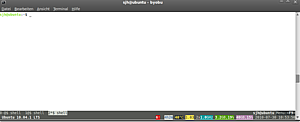

byobu
Dieser Artikel wurde für die folgenden Ubuntu-Versionen getestet:
Ubuntu 14.04 Trusty Tahr
Zum Verständnis dieses Artikels sind folgende Seiten hilfreich:
byobu  ist ein Erweiterungs-Script bzw. Hilfsprogramm, aufbauend entweder auf dem Shell-Fenstermanager Screen oder tmux. Es dient der vereinfachten Bedienung dieser beiden Programme und zeigt darüber hinaus nützliche System-Informationen und Statusmeldungen innerhalb von zwei Zeilen am unteren Rand der Bildschirm-Sitzung(en). Dort können außerdem verschiedene Shell-Sitzungen, vergleichbar mit Browser-Tabs, in Registerkarten verwaltet werden.
ist ein Erweiterungs-Script bzw. Hilfsprogramm, aufbauend entweder auf dem Shell-Fenstermanager Screen oder tmux. Es dient der vereinfachten Bedienung dieser beiden Programme und zeigt darüber hinaus nützliche System-Informationen und Statusmeldungen innerhalb von zwei Zeilen am unteren Rand der Bildschirm-Sitzung(en). Dort können außerdem verschiedene Shell-Sitzungen, vergleichbar mit Browser-Tabs, in Registerkarten verwaltet werden.
Installation¶
byobu kann aus den Paketquellen installiert [1] werden:
byobu
 mit apturl
mit apturl
Paketliste zum Kopieren:
sudo apt-get install byobu
sudo aptitude install byobu
Entwickler-PPA¶
Bei den folgenden Paketen handelt sich um Entwickler-Versionen! Die Versionen sind ggf. nicht stabil und unterliegen häufigen Aktualisierungen, die mitunter auch neue Funktionen beinhalten.
Adresszeile zum Hinzufügen des PPAs:
ppa:byobu/ppa
Hinweis!
Zusätzliche Fremdquellen können das System gefährden.
Ein PPA unterstützt nicht zwangsläufig alle Ubuntu-Versionen. Weitere Informationen sind der  PPA-Beschreibung des Eigentümers/Teams byobu zu entnehmen.
PPA-Beschreibung des Eigentümers/Teams byobu zu entnehmen.
Damit Pakete aus dem PPA genutzt werden können, müssen die Paketquellen neu eingelesen werden.
Verwendung¶
|  |
| byobu-shell |
Das Programm kann über die Eingabe von:
byobu
im Terminal gestartet werden.
Bei häufiger Nutzung ist eine Platzierung des Starters im Panel oder auf dem Desktop per Drag'n'Drop aus dem Startmenü [3] zu empfehlen.
Grundsätzlich kann byobu als Standard-Shell statt des „herkömmlichen“ Terminals verwendet werden, da es außer den zusätzlichen Eigenschaften und Funktionen, die screen und tmux bereitstellen, ein vollwertiges Terminal ist. Funktion und Bedienung sind somit auf Shell-Ebene mit denen des herkömmlichen Terminals identisch.
Merkmale und Funktionen¶
Entkoppelte Shell-Prozesse¶
Ein bedeutender Vorteil zum konventionellen Terminal ist der, dass ein in byobu gestarteter und darin aktiver Prozess von der Shell „entkoppelt“ bzw. unabhängig ist. Ruft man beispielsweise in einem herkömmlichen Terminal den 3D-Beschleunigungs-Test:
glxgears
auf, so erscheint ein Fenster, in dem sich drei Zahnräder drehen, und die Anzahl der Bilder pro Sekunde („frames per second“) wird im Terminal angezeigt. Wird nun das Terminal geschlossen, so wird auch glxgears beendet, jedoch nicht so bei byobu. Die Zahnräder drehen sich weiter, weil auch die Anwendung weiter aktiv ist. Dies kann man nach erneutem Starten von byobu zudem daran erkennen, dass auch die Bilder pro Sekunde während der Zeit weiterhin ausgegeben wurden, in der byobu deaktiviert war.
Sitzung-Verwaltung mittels Tabs¶
Screen und tmux bieten die Möglichkeit, verschiedene virtuelle Konsolensitzungen innerhalb eines einzigen Fensters zu erzeugen und zu verwalten. Anders als dort durch -mehr oder weniger umständliche- Tastaturkürzel bietet byobu hier eine komfortable und übersichtliche Sitzungsverwaltung in der oberen der beiden Informations-Zeilen in einem Panel am unteren Rand des Bildschirms. Über die Funktionstasten werden z.B. neue Sitzungen geöffnet, durch geöffnete Sitzungen (Tabs) gewechselt, die Verbindung zur aktuellen Sitzung gelöst ("detach") oder das Menü aufgerufen (s.u.).
System-Informationen und Statusmeldungen¶
byobu unterstützt die Darstellung einer umfangreichen Reihe von System- und Statusinformationen in der unteren der beiden Zeilen des Fenster-Panels. Die Einblendung der gewünschten Informationen ist über das Menü F9 ("Statusmeldungen ändern") durch Aktivierung bzw. Deaktivierung der einzelnen Statusmeldungen frei konfigurierbar (s.u.).
Funktionstasten¶
| Funktionstasten & Aktion (Keybindings) | |||
| Funktionstaste | Aktion | ||
| F2 | Neue Sitzung öffnen (Neuer Tab) | ||
| F3 | Zur vorherigen Sitzung wechseln (Tab links) | ||
| F4 | Zur nächsten Sitzung wechseln (Tab rechts) | ||
| F5 | Panel neu laden / Informationen aktualisieren | ||
| F6 | Von Sitzung lösen (detach) = byobu schließen (Sitzungen & Prozesse bleiben aktiv und sind nach Neustart wieder verfügbar) | ||
| F7 | Copy/Scrollback Modus aktivieren Scrollback Buffer mit / und ? durchsuchen; Exit mit ⏎ | ||
| F8 | Sitzung (Tab) umbenennen | ||
| F9 | Menü | ||
| F12 | Lock Terminal (Nur relevant in der Virtuellen Konsole, da in der GUI durch schließen des Fensters & Neustart zu umgehen) | ||
| ⇧ + F12 | Funktionstasten an-/abschalten (Tmux) (um sie an ein in der Session laufendes Programm – z. B. Midnight Commander – durchzureichen) | ||
| Strg + A + ! | Funktionstasten an-/abschalten (Screen) | ||
| Strg + C | Prozess beenden | ||
| Strg + D | Sitzung beenden & Tab schließen | ||
Statusmeldungen im Detail¶
| Statusmeldungen und Bedeutung | |||
| Benachrichtigung | Bedeutung (Ort im Panel) | Farbe (Text / Hintergrund) | |
apport | Bei Programmabsturz erstellt apport einen Bericht ("crash report") und erwartet, dass der Anwender entscheidet, ob dieser Bericht versendet wird oder nicht (="pending crash report"). Diese Information erinnert den User hieran. | orange /schwarz | |
arch | Systemarchitektur der installierten Distribution. Gleichbedeutend dem Befehl arch. Wird hier die Information über die Architektur der Paketverwaltung bevorzugt, ist hierfür in der Datei /usr/lib/byobu/arch [3] der Eintrag uname -m in dpkg --print-architecture zu ändern. (unten/links) | standard / standard | |
battery | Akku-Ladestatus; |-| Entladen, |+| Laden, |=| Voll Geladen - Beim Entladen und Laden wird der Ladezustand in % dargestellt - Zur weiteren Hervorhebung ändert sich die Hintergrundfarbe je nach Zustand: Grün, Gelb, Rot (unten/rechts) | (siehe "Bedeutung") | |
cpu_count | Anzahl der Prozessor-Kerne gefolgt von einem "x" (unten/rechts) | standard / standard | |
cpu_freq | Prozzessor-Takt in GHz (unten/rechts) | weiß / hellblau | |
custom | Benutzerdefinierte, ausführbare Skripte oder Anwendungen aus Verzeichnis ~/.byobu/bin (muss selber angelegt werden) einbinden. Syntax der Skript-Bezeichnung: n_name, wobei n die Aktualisierungs-Frequenz der Statusanzeige in Sekunden angibt; n sollte nicht weniger als 5 Sekunden betragen (z.B. 05_foo, 06_bar, etc.). Bitte beachten: CPU-intensive Skripte können Einfluss auf die gesamte Systemleistung haben! | standard / standard bzw. Benutzdefiniert | |
date | Datum. Format: Jahr-Monat-Tag (unten/rechts) | standard / standard | |
disk | Festplattenplatz im Verzeichnis /; Format: Gesamt verfügbar, Belegt in %. Das Standardverzeichnis kann geändert werden. Hierfür in der Datei ~/.byobu/statusrc durch MONITORED_DISK=/wasauchimmer wunschgemäß anpassen [3] (unten/weit-rechts) | weiß / lila | |
ec2_cost | Berechnung laufender Kosten des Webservice Amazon EC2  | grün / schwarz | |
fan_speed | Prozessor- oder System-Lüfter-Geschwindigkeit, wie/wenn vom lm-Sensor übermittelt (unten/rechts) | schwarz / grau | |
hostname | Hostname des Systems (oben/rechts) | weiß / schwarz | |
ip_adress | IP-Adresse des Systems in Dezimalpunktschreibweise (oben/rechts) | schwarz / grau | |
load_average | Ø in der letzten Minute vom System geladen in MB (unten/rechts) | schwarz / gelb | |
logo | Kryptische Annäherung an das aktuelle Betriebssystem-Logo. Anpassbar in ~/.byobu/logo oder überschreiben durch setzen von LOGO=*wunschsmilie* in ~/.byobu/statusrc [3] (unten/links) | nach Einstellung | |
mail | System-Mail für den aktuellen User; Anzeige: "M" (Nicht verwechseln mit email!) (unten/links) | schwarz / grau | |
mem_available | Verfügbarer Arbeitsspeicher ("RAM") in MB bzw. GB (unten/rechts) | weiß / grün | |
mem_used | Benutzter Arbeitsspeicher in % vom verfügbaren Arbeitsspeicher (unten/rechts) | weiß / grün | |
network | Netzwerksende-/Empfangs-Bandbreite in kB/s der letzten 3 Sekunden ('^' = 'up' und 'v' = 'down' (unten/rechts) | weiß / violett | |
processes | Gesamtzahl der laufenden Prozesse auf dem System gefolgt von einem '&' als Hinweis auf 'Hintergrund-Prozesse' (unten/rechts) | weiß / ocker | |
reboot_required | Neustart erforderlich nach System-Aktualisierung ("update"); Anzeige: "R". Zusätzlich wird <F5> angezeigt, wenn nur das Profil aktualisiert werden muss, um Änderungen sichtbar zu machen (unten/links) | weiß / blau | |
release | Distribution und Version des laufenden Systems, wie von 'lsb release' übermittelt. Übersteuerung möglich durch Setzen von DISTRO=wasauchimmer in ~/.byobu/statusrc [3] (unten/links) | schwarz (fett) / grau) | |
services | Service. Der Benutzer kann hier eine Dienst-Überwachung anzeigen lassen. Hierzu ist die SERVICE-Variable in ~/.byobu/status anzupassen. [3] (unten/mitte) | cyan / weiß | |
time | Systemzeit in Std:Min:Sek (unten/rechts) | standard / standard | |
time_utc | Systemzeit nach "Coordinated Universal Time" (UTC, auch GMT) in Std:Min (unten/rechts) | schwarz / hellgrau | |
updates_available | Anzahl der verfügbaren Aktualisierungen ("updates"), gefolgt von einem '!' - bei Sicherheits-Aktualisierungen gefolgt von '!!' (unten/mitte) | weiß / rot | |
uptime | Laufzeit des Systems seit dem letzten Neustart in _h_m (Std min) (unten/links) | blau / grau | |
users | Anzahl der "remote"-Benutzer, die via SSHD im System angemeldet sind. Leer, wenn 0 Benutzer (unten/rechts) | rot / grau | |
whoami | Name des Benutzers der Bildschirmsitzung (oben/rechts) | weiß / schwarz | |
wifi_quality | WLAN-Qualität. Anzeige der Bitrate in 'Mbps', gefolgt von der Signalstärke in Prozent (unten/links) | grau / petrol | |
Problembehebung¶
SSH-Byobu¶
Man kann byobu auch das alte SSH-Screen-Verhalten beibringen:
Mit den folgenden Erweiterung am Ende der Datei .profile oder der system-weiten /etc/profile wird automatisch zu einer screen-Sitzung ("session") verbunden, wenn die Verbindung per ssh erfolgt. Bestehende Verbindungen zu der Sitzung werden ggf. getrennt.
Hinweis:
Man sollte byobu nicht in die Datei .bashrc eintragen, da es sonst in jedem Terminal ausgeführt wird. Das würde also auch für Dinge wie scp oder byobus eigene "virtuelle Terminals" gelten.
if [[ "$TERM" != "screen-bce" && "$SSH_CONNECTION" != "" ]]; then /usr/bin/byobu-screen -S sshscreen -d -R && exit fi
Wird der screen beendet oder getrennt ("detach"), wird auch die ssh-Verbindung getrennt, also ist so auch nur eine ssh-Verbindung möglich. Das kann verhindert werden, indem man && exit weglässt.
Midnight Commander¶
Wer hier die Mausunterstützung vermisst: Midnight Commander mit
mc -x
starten. Alternativ hilft es ggf. auch, vor dem Start
export TERM=xterm
zu setzen. Mit Midnight Commander Version 4.8.11 und höher sollten diese Work-Arounds allerdings nicht mehr nötig sein.
Funktionstasten in der Virtuellen Konsole¶
In der Virtuellen Konsole von Ubuntu werden für byobu mit tmux sämtliche Funktionstasten mit ⇧ oder Strg nicht erkannt. Die einzige Möglichkeit Zugriff auf diese Funktionen zu erhalten ist das Ändern [4] der Tastenbelegungen in den entsprechenden Konfigurationsdateien. Beispielsweise für ⇧ + F12 um die Funktionstasten ab-/anzuschalten:
/usr/share/byobu/keybindings/f-keys.tmux
bind-key -n S-F12 source $BYOBU_PREFIX/share/byobu/keybindings/f-keys.tmux.disable \; display-message "Byobu F-keys: DISABLED"
/usr/share/byobu/keybindings/f-keys.tmux.disable
bind-key -n S-F12 source $BYOBU_PREFIX/share/byobu/keybindings/f-keys.tmux \; display-message "Byobu F-keys: ENABLED"
Links¶
tmux mit Byobu nutzen
- Artikel Pro-Linux, 01/2015Byobu Bling with Unicode Custom Indicators
- Blogbeitrag, 04/2013Terminal
 Progammübersicht
Progammübersicht
- Erstellt mit Inyoka
-
 2004 – 2017 ubuntuusers.de • Einige Rechte vorbehalten
2004 – 2017 ubuntuusers.de • Einige Rechte vorbehalten
Lizenz • Kontakt • Datenschutz • Impressum • Serverstatus -
Serverhousing gespendet von